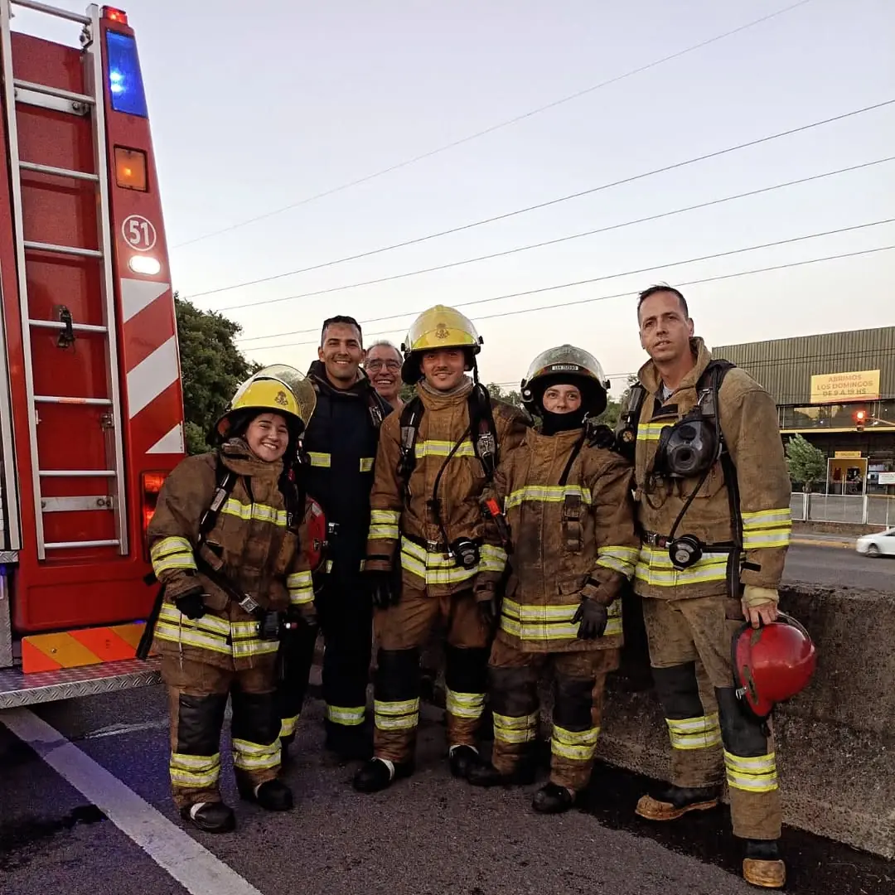

Mantenimiento de móviles
Conservación, reparaciones y mantenimiento de los vehículos utilizados en las intervenciones.

Tu colaboración nos ayuda a seguir trabajando por la seguridad de nuestra comunidad.
Cada aporte contribuye al sostenimiento de nuestra institución y nos permite continuar desarrollando nuestra labor al servicio de San Isidro.
El funcionamiento de una institución de bomberos voluntarios requiere recursos para conservar sus instalaciones, vehículos y materiales en condiciones.
Las donaciones están destinadas a contribuir con el mantenimiento y sostenimiento de la institución, permitiendo acompañar las necesidades de su actividad cotidiana.
Conservación, reparaciones y mantenimiento de los vehículos utilizados en las intervenciones.
Mantenimiento y reposición de herramientas, materiales y elementos necesarios para las tareas operativas.
Conservación y mantenimiento de las dependencias y espacios de trabajo de nuestra institución.
No importa el monto. Cada colaboración es importante.
Elegí uno de los importes sugeridos o ingresá el monto con el que desees colaborar.
Estamos preparando un sistema de donaciones a través de Mercado Pago para facilitar las contribuciones a nuestra institución.
Los aportes estarán orientados al mantenimiento y sostenimiento de Bomberos Voluntarios de San Isidro.
El compromiso de nuestros bomberos se refleja en cada intervención, entrenamiento y actividad desarrollada al servicio de la comunidad.
Para acompañar esa vocación de servicio es fundamental mantener los recursos materiales y las instalaciones que hacen posible nuestra labor.
Tu colaboración también forma parte de nuestro compromiso.Cada aporte representa un gesto de confianza y acompañamiento hacia quienes trabajan diariamente por la seguridad de San Isidro.
Quiero colaborar